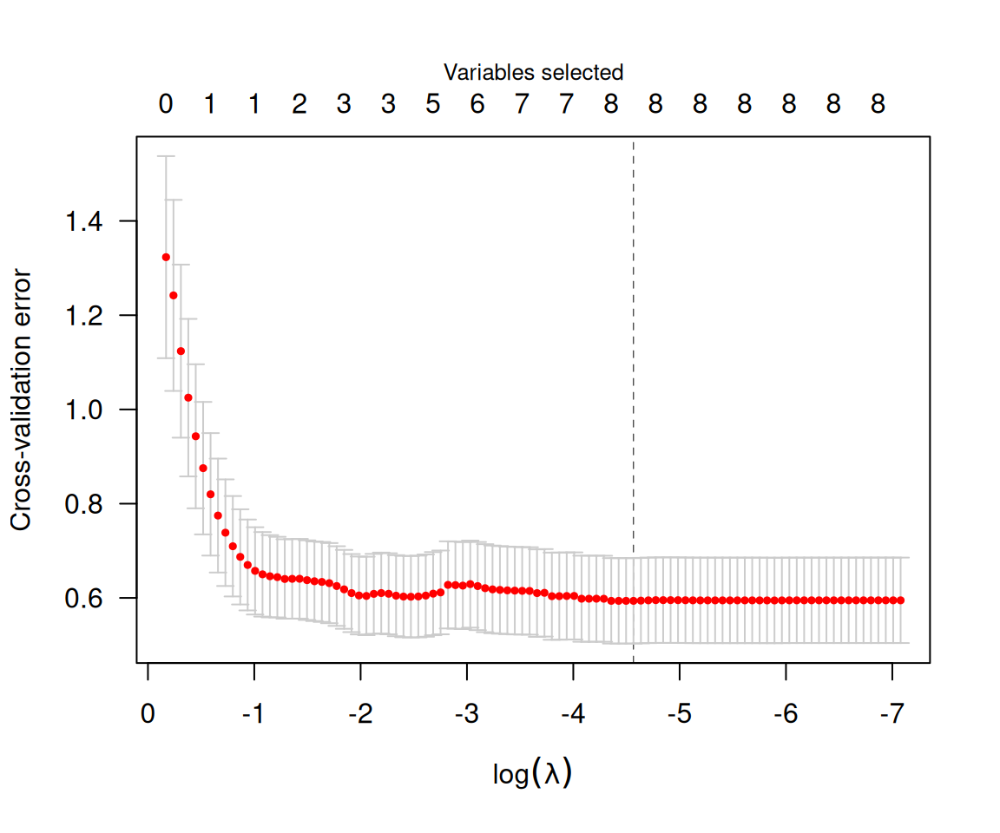
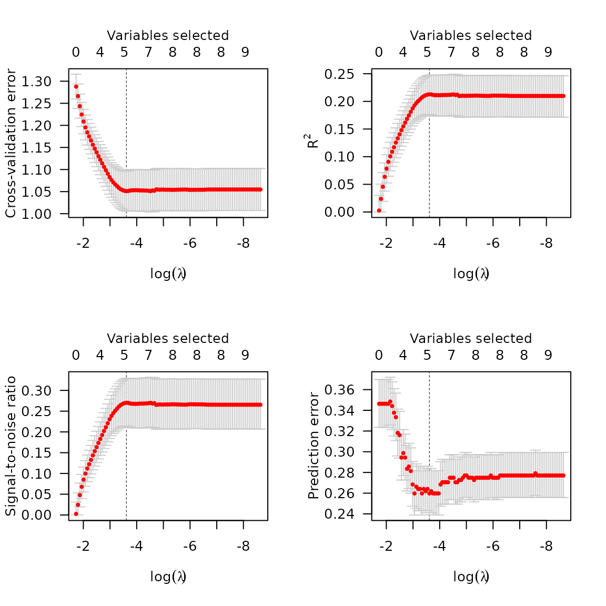
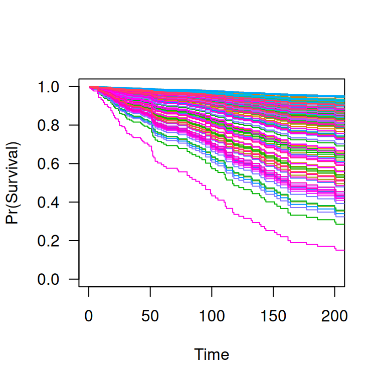

ncvreg fits models that fall into the penalized
likelihood framework. Rather than estimating \(\bb\) by maximizing the likelihood, in this
framework we estimate \(\bb\) by
minimizing the objective function \[
Q(\bb|\X, \y) = \frac{1}{n}L(\bb|\X,\y) + P_\lam(\bb),
\] where the loss function \(L(\bb|\X,\y)\) is the deviance (\(-2\) times the log-likelihood), \(P_\lam(\bb)\) is the penalty, and \(\lam\) is a regularization parameter that
controls the tradeoff between the two components. This article describes
the different loss models available in ncvreg; see penalties for more information on the
different penalties available.
Gaussian (linear regression)
In linear regression, the loss function is simply the squared error loss: \[ L(\bb|\X,\y) = \norm{\y-\X\bb}_2^2; \] this loss is proportional to the deviance if the outcome \(\y\) follows a normal distribution with constant variance and mean given by \(\X\bb\).
In the Prostate data packaged with ncvreg,
the response is the prostate specific antigen (PSA), measured on the log
scale, and follows an approximate normal distribution; see
?Prostate for more information on the data set. Loading
this data set into R,
data(Prostate)
X <- Prostate$X
y <- Prostate$yBy default, ncvreg fits a linear regression model with a
minimax concave penalty (MCP):
fit <- ncvreg(X, y)This produces a path of coefficient estimates, which we can plot with
plot(fit)
Although the least squares loss function is convex, the MCP penalty
is not. The resulting objective function, therefore, may or may not be
convex. ncvreg uses a local convexity diagnostic, as
described in Breheny and
Huang (2011), to identify the regions of the coefficient path where
the objective function is not convex; this is the gray shaded region in
the plot. Users should be aware that solutions in this region may only
be local optima of the objective function, not global ones.
Post-selection inference is available using the summary
method:
summary(fit, lambda=0.05)
# MCP-penalized linear regression with n=97, p=8
# At lambda=0.0500:
# -------------------------------------------------
# Nonzero coefficients : 6
# Expected nonzero coefficients: 2.54
# Average mfdr (6 features) : 0.424
#
# Estimate z mfdr Selected
# lcavol 0.53179 8.880 < 1e-04 *
# svi 0.67256 3.945 0.010189 *
# lweight 0.60390 3.666 0.027894 *
# lbph 0.08875 1.928 0.773014 *
# age -0.01531 -1.788 0.815269 *
# pgg45 0.00168 1.160 0.917570 *The local marginal false discovery rate (mfdr) is given for each of
the selected features. Roughly, this corresponds to the probability that
the given feature is marginally independent of the residuals at that
value of \(\lam\). In this case, it
would appear that lcavol, svi, and
lweight are clearly associated with the response, even
after adjusting for the other variables in the model, while
lbph, age, and pgg45 may be false
positives selected simply by chance. For more information on
summary() and its various options, see here.
Typically, one would carry out cross-validation for the purposes of assessing the predictive accuracy of the model at various values of \(\lambda\):
By default, the cross-validation error (CVE) is plotted; for all
models in ncvreg, the cross-validation error is defined as
\[
\begin{align*}
\CVE(\lam) &= \frac{1}{n} \sum_i L\{y_i, \eta_{-i}(\lam)\}\\
\eta_{-i}(\lam) &= \sum_j x_{ij}\bh_j(-i,\lam),
\end{align*}
\] where \(\bbh(-i,\lam)\)
denotes the estimated regression coefficients at \(\lam\) for the fold in which observation
\(i\) has been left out. The loss
function is determined by the type of model; for least squares loss,
therefore, \[
\CVE(\lam) = \frac{1}{n} \sum_i\{y_i-\eta_{-i}(\lam)\}^2\\
\]
Alternatively, one can plot \(\hat{\sigma}(\lam)\), the signal-to-noise ration (SNR), or \(R^2\):
par(mfrow=c(2,2))
plot(cvfit, type='cve')
plot(cvfit, type='scale') # sigma hat
plot(cvfit, type='snr')
plot(cvfit, type='rsq')
Calling summary on a cv.ncvreg object will
provide a summary of these quantities at the value which minimizes \(\CVE\):
summary(cvfit)
# MCP-penalized linear regression with n=97, p=8
# At minimum cross-validation error (lambda=0.0104):
# -------------------------------------------------
# Nonzero coefficients: 8
# Cross-validation error (deviance): 0.59
# R-squared: 0.55
# Signal-to-noise ratio: 1.22
# Scale estimate (sigma): 0.771
# MCP-penalized linear regression with n=97, p=8
# At lambda=0.0104:
# -------------------------------------------------
# Nonzero coefficients : 8
# Expected nonzero coefficients: 4.06
# Average mfdr (8 features) : 0.507
#
# Estimate z mfdr Selected
# lcavol 0.564364 8.4578 < 1e-04 *
# svi 0.761619 4.0093 0.006833 *
# lweight 0.621983 3.3883 0.057746 *
# age -0.021247 -2.0114 0.697464 *
# lcp -0.106038 -1.8854 0.746320 *
# lbph 0.096715 1.7841 0.779670 *
# pgg45 0.004459 1.5989 0.828584 *
# gleason 0.049149 0.4515 0.939912 *To access the elements of the fit, coef and
predict methods are provided. For example,
coef(fit, lambda=0.02) returns the estimated coefficients
at \(\lambda\)=0.02, while
coef(cvfit) returns the estimated coefficients at the value
of \(\lam\) minimizing CVE.
Binomial (logistic regression)
In logistic regression, the loss function is: \[
L(\bb|\X,\y) = -2\sum_{i:y_i=1}\log\ph_i - 2\sum_{i:y_i=0}\log(1-\ph_i);
\] this loss is the deviance for a binomial distribution with
probabilities \(P(Y_i=1)=\ph_i\) given
by: \[
\ph_i = \frac{\exp(\eta_i)}{1+\eta_i},
\] where \(\be = \X\bb\) denotes
the linear predictors. The Heart data provides an example
of data that can be used with logistic regression. Loading this data set
into R,
data(Heart)
X <- Heart$X
y <- Heart$yOne can change the loss function by specifying family;
to fit a penalized logistic regression model,
fit <- ncvreg(X, y, family='binomial')As before, you can call plot, coef,
predict, summary, etc. on
fit:
summary(fit, lambda=0.02)
# MCP-penalized logistic regression with n=462, p=9
# At lambda=0.0200:
# -------------------------------------------------
# Nonzero coefficients : 7
# Expected nonzero coefficients: 1.90
# Average mfdr (7 features) : 0.271
#
# Estimate z mfdr Selected
# age 0.0506911 5.8368 < 1e-04 *
# famhist 0.9096673 4.1177 0.0024258 *
# tobacco 0.0802204 3.3117 0.0443510 *
# typea 0.0370468 3.1833 0.0656364 *
# ldl 0.1657752 3.1019 0.0831088 *
# obesity -0.0087180 -1.2579 0.8340700 *
# sbp 0.0001648 0.9981 0.8707837 *Cross-validation is similar, although (a) there is a new option,
type='pred' for cross-validated prediction error
(misclassification error) and (b) type='scale' is no longer
an option:

Note that, as defined above, cross-validation error is the cross-validated deviance. At its optmium, the penalized logistic regression model can predict about 73% of coronary heart disease cases correctly (27% misclassification).
Poisson
In Poisson regression, the loss function is: \[
L(\bb|\X,\y) = 2\sum_i \left\{y_i\log y_i - y_i\log \mu_i + mu_i -
y_i\right\};
\] note that some of these terms are constant with respect to
\(\mu_i\) and can therefore be ignored
during optimization. This loss is the deviance for a Poisson
distribution \(Y_i \sim
\text{Pois}(\mh_i)\) with rate parameter given by: \[
\mh_i = \exp(\eta_i).
\] To fit a penalized Poisson regression model with
ncvreg:
fit <- ncvreg(X, y, family='poisson')Cox proportional hazards
The above models all fall into the category of distributions known as
exponential families (hence the family) argument.
ncvreg also allows users to fit Cox proportional hazards
models, although these models fall outside this framework and are
therefore fit using a different function, ncvsurv. In Cox
regression, the deviance is \[
L(\bb|\X,\y) = -2\sum_{j=1}^{m} d_j \eta_j + 2\sum_{j=1}^{m} d_j
\log\left\{\sum_{i \in R_j} \exp(\eta_i)\right\},
\] where \(t_1 < t_2 < \ldots
< t_m\) denotes an increasing list of unique failure times
indexed by \(j\) and \(R_j\) denotes the set of observations still
at risk at time \(t_j\), known as the
risk set.
The Lung data (see ?Lung for more details)
provides an example of time-to-event data that can be used with Cox
regression. Loading this data set into R,
data(Lung)
X <- Lung$X
y <- Lung$yTo fit a penalized Cox regression model,
fit <- ncvsurv(X, y)As before, you can call plot, coef,
predict, summary, etc. on
fit:
summary(fit, lambda=0.02)
# MCP-penalized Cox regression with n=137, p=8
# At lambda=0.0200:
# -------------------------------------------------
# Nonzero coefficients : 7
# Expected nonzero coefficients: 4.59
# Average mfdr (7 features) : 0.656
#
# Estimate z mfdr Selected
# karno -0.032745 -6.5040 < 1e-04 *
# squamous -0.853399 -3.7843 0.026061 *
# large -0.460405 -2.0522 0.806970 *
# trt 0.294489 1.5967 0.905628 *
# adeno 0.324743 1.3941 0.928532 *
# age -0.008869 -1.0297 0.952846 *
# prior 0.033326 0.3585 0.969878 *Cross-validation is similar:
cvfit <- cv.ncvsurv(X, y)
par(mfrow=c(1,2))
plot(cvfit, type='cve')
plot(cvfit, type='rsq')
In addition to the quantities like coefficients and number of nonzero
coefficients that predict returns for other types of
models, predict() for an ncvsurv object can
also estimate the baseline hazard (using the Kalbfleish-Prentice method)
and therefore, the survival function. A method to plot the resulting
function is also available:
S <- predict(fit, X[1,], type='survival', lambda=0.02)
S(365) # Estiamted survival at 1 year
# [1] 0.8594485
plot(S, xlim=c(0,200))
When multiple subjects are involved in the prediction:
S <- predict(fit, X, type='survival', lambda=0.02)
S[[1]](365) # Estimated survival at 1 year for subject 1
# [1] 0.8594485
S[[2]](365) # Estimated survival at 1 year for subject 2
# [1] 0.8887079
plot(S, xlim=c(0,200))